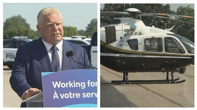

在20年前，为警队配备直升机还是一个热门话题。当时，安省省长福特(Doug Ford)已故的弟弟、多伦多市议员罗布福特(Rob Ford)就直言不讳地支持为警队配备空中机队。
20年后，福特承诺省府将斥资1.34亿元，购买5架新型警用直升机供警队在大多伦多地区和渥太华的空中执勤，打击诸如汽车盗窃、劫车、街头赛车和酒后驾驶等罪案。
有专家说，为警队配备直升机对于打击罪案是有用的，但不是万能的。
根据福特的计划，将为安省省警购买两架直升机，来与多伦多和渥太华的警队合作。另外购买3架直升机，由杜兰区、荷顿区和皮尔区的警队营运。
福特还宣布成立大多伦多地区联合空中支援小组 (JASU)，他说，新的直升机机队是打击居高不下的汽车盗窃罪案的最佳选择，多伦多在去年被盗窃的汽车多达1.2万辆。
Equite Association是一间保险业的调查机构，该公司调查部的副总裁加斯特(Bryan Gast)曾是一名安省省警，他表示，保险业欢迎直升机加入打击汽车盗窃罪案的战斗。
他说：「每一种工具将有助于打击犯罪，包括与汽车相关的犯罪活动。」
大多伦多地区的警队也对引入直升机感到兴奋。多伦多警察总长戴乔(Myron Demkiw)上周三(31日)在出席多伦多警政委员会的会议时说：「配备了最新技术的直升机将有助于确保多伦多的安全，遏制暴力劫车罪案。」
他还说：「除了打击汽车盗窃、街头赛车和酒后驾驶的罪案之外，直升机还将协助寻找失踪人士和警方的其它行动，且市府无需承担任何开支。」
皮尔区警察总长杜兰帕(Nishan Duraiappah)说：「这是一项巨大的投资，将为我们的警员提供迫切需要的支援，帮助他们完成每天的艰苦工作，来加强社区安全。」
皮尔区警队还指出，为警队配备直升机还意味著协助巡逻、追捕疑犯和车辆、搜寻失踪人士以及打击街头赛车和特技驾驶。
在加国各地的其它城市，警方是如何利用直升机来执法的？例如，卡加利警队已拥有直升机多年，并在2020年用两架替换飞机升级了他们的机队，先前的机队已服役了超过15年。
卡加利警队说，直升机使他们只消8分钟，就能从城市的一端飞到另一端。
满地可警队经常向魁省省警借用直升机，来增加在热门聚集场所周围的可见度。
在新冠疫情的高峰期，大型集会是被禁止的，因此，满地可警队在深夜10时至凌晨3时期间来维持满地可旧港区(Old Port)、市中心和皇家山(Mount Royal)的治安，是一项特别重要的优先要务。
一些满地可居民抱怨说，低空飞行的警用直升机令人感到恐惧和烦躁，特别是给儿童和宠物带来困扰。